.gitignore
-
sebuah file yang bisa kita simpan didalam repository git
kita agar kedepannya pada saat melakukan add & commit,
ada file yang tidak ikut terbawa kedalam add nya
- kita bikin repo baru di github
- kita masuk gitbash dan bikin folder
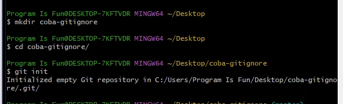
- buat file baru
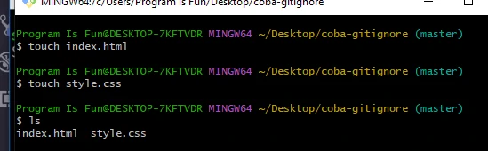
- kita tambahkan remote dari repo github dulu
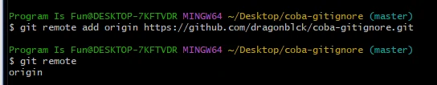
- kita add dan commit dulu
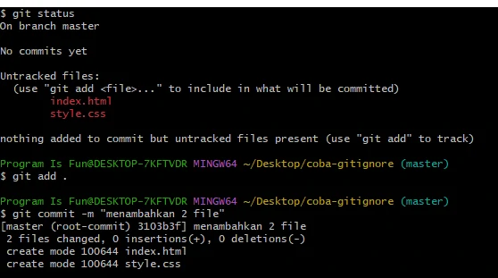
- kita push
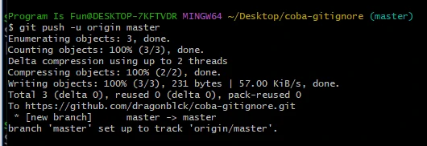
kita jalankan .gitignore
- buat file baru script.js & config.txt
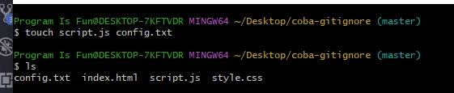
- kita ingin agar yang config.txt itu tidak dikirim
- caranya buat file baru .gitignore
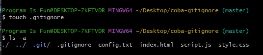
- kita ketik di .gitignore : config.txt
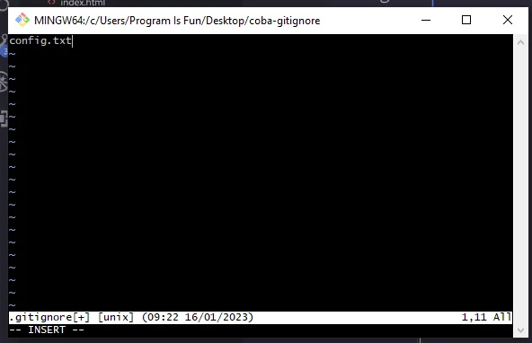
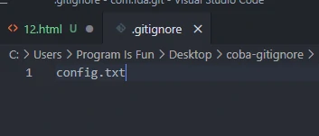
- jika kita add dan cek status
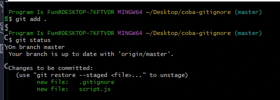
- jadi tidak ada file config.txt
bisa menyimpan folder di .gitignore
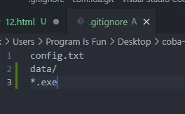
-
biasanya .gitgnore digunakan untuk kalo misalnya didalam
repo untuk configurasi untuk local
saran gitignore
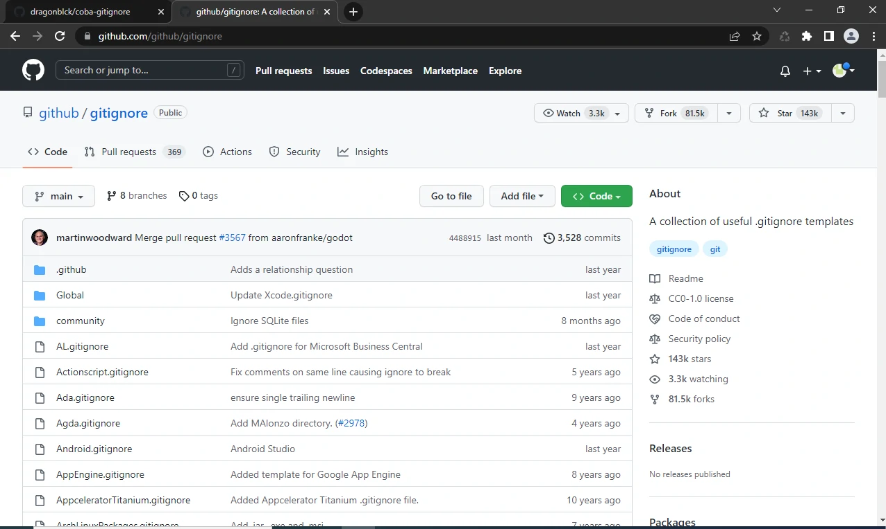
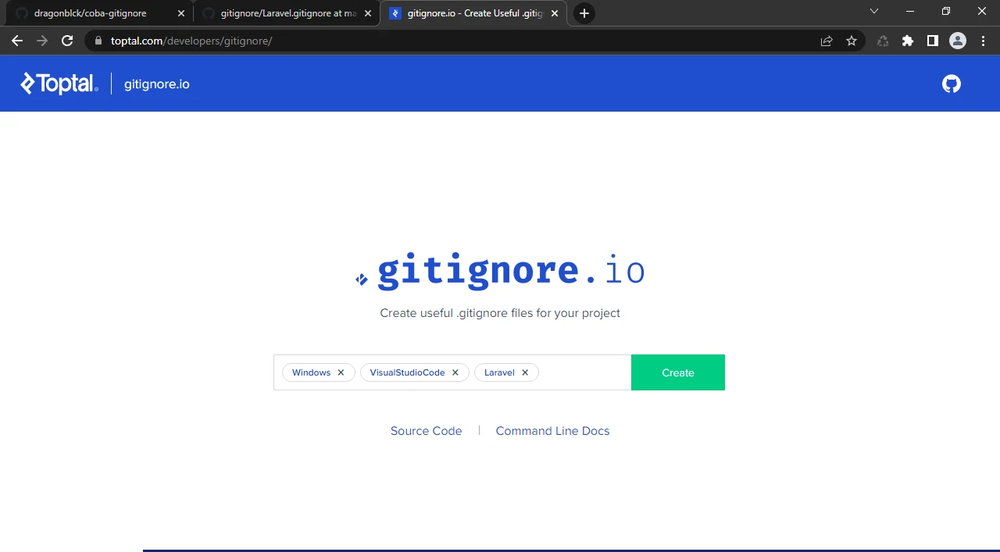
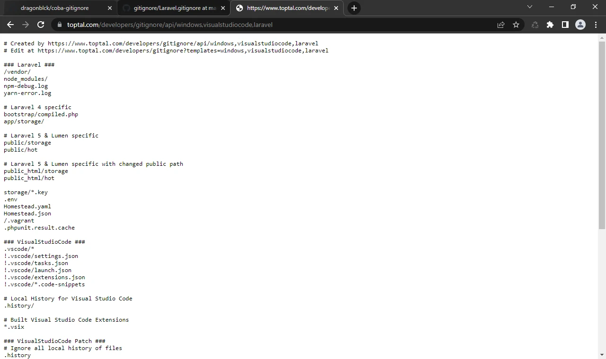
kita copy teks tersebut ke dalam file .gitignore